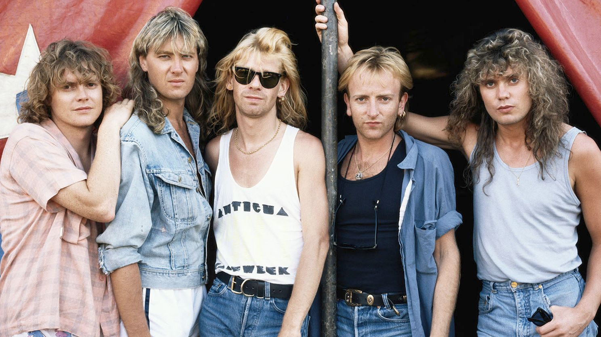
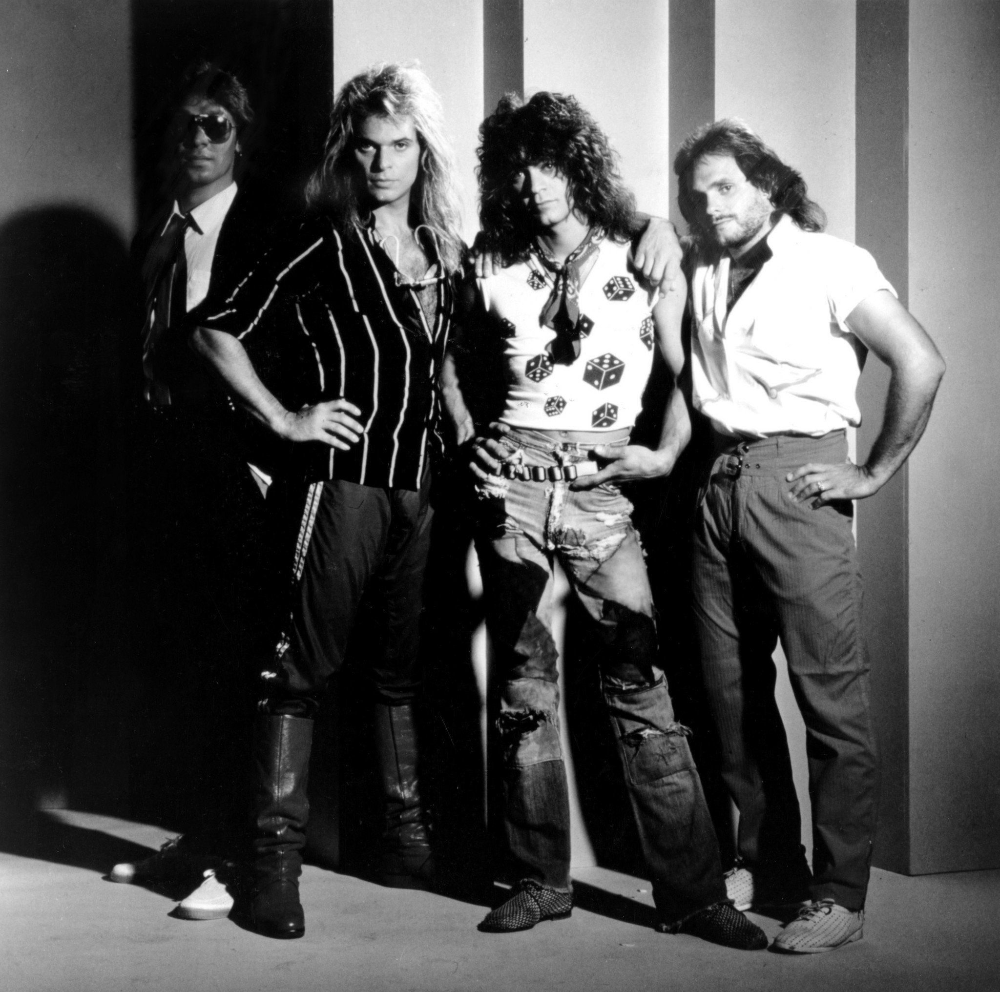
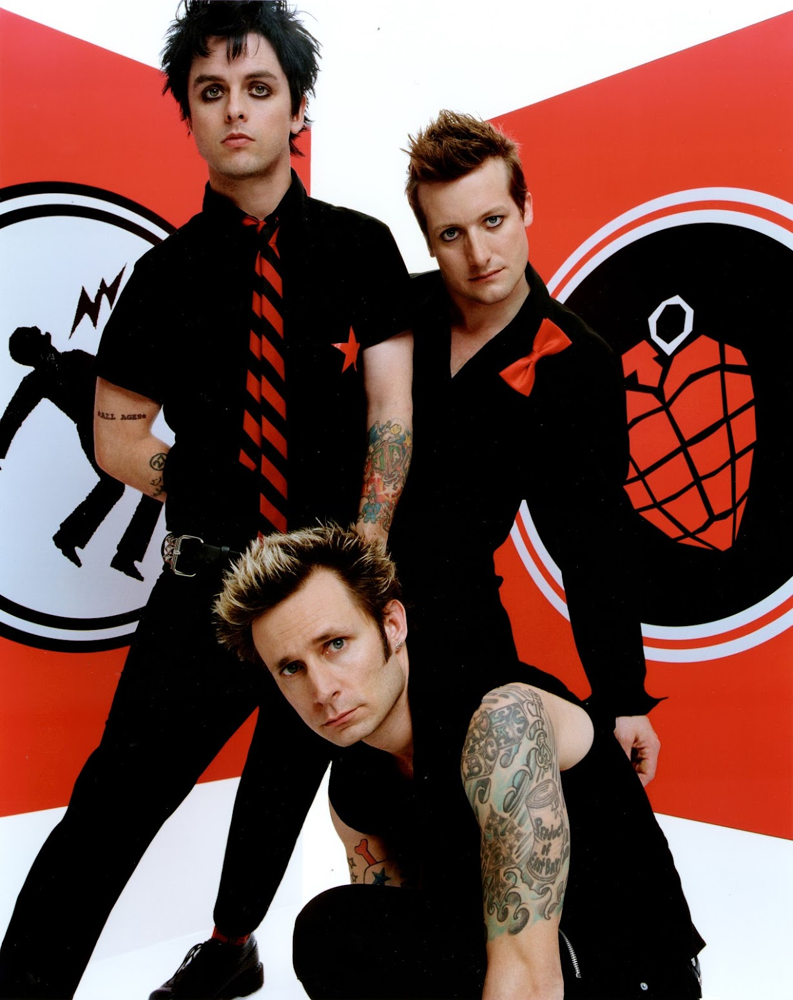
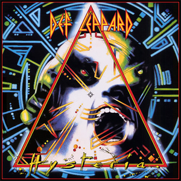
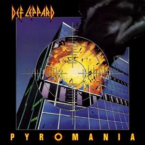
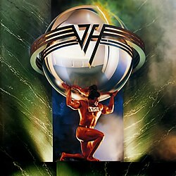
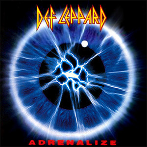
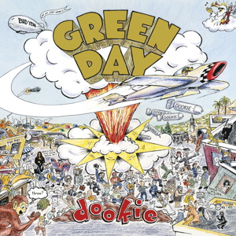

Подробна информация за албумите
Направо към :
За групите накратко
Def Leppard

Def Leppard е английска рок група, създадена през 1977 г. в Шефилд, която става една от водещите банди в движението New Wave of British Heavy Metal през началото на 80-те години. Те се отличават със своя мелодичен хард рок стил, съчетаващ силни китарни рифове и многогласни вокали. Групата постига огромен международен успех с албуми като Pyromania (1983) и Hysteria (1987), които включват хитове като „Pour Some Sugar on Me“ и „Love Bites“. Def Leppard са продали над 100 милиона копия по света и остават една от най-влиятелните рок групи, като продължават да бъдат активни и днес.
Van Halen

Van Halen е американска хард рок група, създадена през 1972 г. в Пасадена, Калифорния, от братята Еди и Алекс Ван Хален заедно с Дейвид Лий Рот и Майкъл Антъни. Бандата бързо се превръща в една от най-успешните и влиятелни рок групи в света, известна със своя енергичен стил и виртуозната китарна техника на Еди Ван Хален. Пробивът им идва с дебютния албум Van Halen (1978), а по-късно албумът 1984 съдържа хита „Jump“, който достига първо място в класациите. През годините групата печели множество награди и оказва огромно влияние върху развитието на рок музиката.
Green Day

Green Day е американска рок група, създадена през 1987 г. в Калифорния от Били Джо Армстронг и Майк Дърнт, към които по-късно се присъединява барабанистът Тре Куул. Те стават едни от най-важните представители на поп-пънк жанра, като пробивът им идва с албума Dookie (1994), който се продава в милиони копия. Green Day са продали около 75 милиона албума по света и са носители на множество награди, включително няколко награди „Грами“. Със своята енергична музика и социално ангажирани текстове, те остават една от най-влиятелните съвременни рок групи.
Hysteria

Hysteria е четвъртият студиен албум на Def Leppard и безспорно най-значимият в тяхната кариера. Издаден през 1987 г., той е резултат от изключително дълъг и труден творчески процес, продължил повече от три години. Основна роля за звученето му има продуцентът Robert John "Mutt" Lange, който създава силно полиран, почти перфектен звук чрез многослойни записи, внимателно подбрани ефекти и детайлна обработка на всеки инструмент.
Създаването на албума е белязано от драматични събития, най-вече тежката катастрофа на барабаниста Rick Allen, при която той губи лявата си ръка. Въпреки това, с помощта на специално разработен електронен барабанен комплект, той успява да се върне към записите – нещо, което се превръща в една от най-вдъхновяващите истории в рок музиката. Албумът е записван в различни студиа и често е бил прекъсван, което допълнително увеличава разходите и времето за завършване
Музикално Hysteria комбинира хард рок и глем метъл с поп чувствителност, като целта е всяка песен да бъде потенциален хит. Това се оказва успешно – албумът съдържа седем хит сингъла и достига №1 в класацията Billboard 200. С над 20 милиона продадени копия, той остава един от най-продаваните албуми в историята и оказва огромно влияние върху продукцията на рок музика през следващите десетилетия.
Ако някой ме пита коя ти е любимата песен от този албум едва ли ще мога да дам лесен отговор. Hysteria, God of War, Run Riot, Rocket, Armageddon It и Animal са песни, които не напускат скорошните ми слушания, и едва ли мога да си избера някоя любима песен сред тях.
Hysteria видео
Armageddon It видео
Pyromania

Pyromania е третият студиен албум на Def Leppard и ключов момент в тяхното израстване като световна рок група. Издаден през 1983 г., той представлява преход от по-тежкия звук на ранните им години към по-достъпен и комерсиален стил, без да губи енергията и силата на хард рока. Това е и първият албум с китариста Phil Collen, който заменя Pete Willis по време на записите
Продуцентът Mutt Lange отново играе ключова роля, като въвежда по-структуриран подход към композициите и използва студийните технологии за създаване на ясен и мощен звук. Албумът се възползва максимално от нарастващото влияние на MTV, като видеоклиповете към песните се въртят изключително често и допринасят за огромната популярност на групата.
С хитове като „Photograph“ и „Rock of Ages“, Pyromania достига второ място в Billboard 200 и продава над 10 милиона копия само в САЩ. Той се счита за един от най-важните рок албуми на 80-те години и оказва значително влияние върху развитието на глем метъла и комерсиалния рок.
Относно този албум най-любимата ми песен от него е Photograph, като често други песни които слушам от албума са Rock! Rock! (Till You Drop) и Stagefright.
Photograph видео
5150

5150 е седмият студиен албум на Van Halen и бележи началото на нова ера за групата. Издаден през 1986 г., той е първият албум с новия вокалист Sammy Hagar, който заменя David Lee Roth. Тази промяна води до осезаема трансформация в звученето на бандата.
Албумът поставя по-силен акцент върху мелодията, хармонията и използването на клавирни инструменти, което е характерно за стила на Eddie Van Halen през този период. Записите се провеждат в личното студио на Еди, наречено „5150“, което позволява по-голяма свобода и контрол върху продукцията.
5150 включва хитове като „Why Can’t This Be Love“ и „Dreams“ и става първият албум на групата, достигнал №1 в Billboard 200. Успехът му доказва, че Van Halen могат да продължат успешно и след значителни промени в състава си.
Може би най-често слушаната от мен песен от този албум е Why Can’t This Be Love, като други любими мои песни от албума са Dreams, Love Walks In и 5150.
Why Can’t This Be Love видео
Adrenalize

Adrenalize е петият студиен албум на Def Leppard и е издаден през 1992 г. в труден период за групата. Това е първият албум след смъртта на китариста Steve Clark, който въпреки това допринася за част от композициите преди кончината си.
Албумът следва формулата на Hysteria, като използва силно полиран звук, многослойни вокали и добре структурирани песни. Въпреки критиките, че не предлага много нови идеи, той постига голям комерсиален успех и достига №1 в класациите както в САЩ, така и във Великобритания.
Сингли като „Let’s Get Rocked“ се превръщат в популярни хитове, а албумът доказва устойчивостта на групата в лицето на загуби и промени. Той също така е единственият записан като четиричленен състав.
Stand Up (Kick Love Into Motion) е моя фаворит от този албум и няма да съм изненадан ако се окаже и най-слушаната от мен песен. Други парчето от албумът, които харесвам са Let’s Get Rocked и Heaven Is.
Stand Up (Kick Love Into Motion) видео
Dookie

Dookie е третият студиен албум на Green Day и един от най-важните албуми в историята на поп-пънка. Издаден през 1994 г., той бележи преминаването на групата към голям лейбъл и ги изстрелва към световна популярност.
Албумът се отличава със своя суров, но мелодичен звук, кратки и енергични песни и текстове, които засягат лични и социални теми като тревожност, отчуждение и младежки живот. Фронтменът Billie Joe Armstrong черпи вдъхновение от собствения си опит, което прави песните по-автентични и близки до публиката.
Dookie печели награда „Грами“ и продава над 20 милиона копия по света. Той не само утвърждава Green Day като водеща група, но и проправя пътя за много други поп-пънк банди през 90-те и началото на 2000-те години.
Парчетата от Dookie са доста популярни и дори преди да открия албума бях запознат с песни като Basket Case и Welcome to Paradise, но от този албум любима песен все още си ми остава When I Come Around.